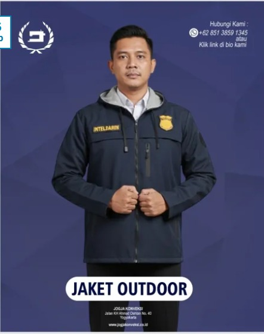

Seragam
Pembuatan seragam sekolah, seragam kerja, seragam olahraga, serta seragam PDH dan PDL untuk berbagai kebutuhan.
- Seragam sekolah
- Seragam kerja dan instansi
- Seragam olahraga
- PDH/PDL
Beragam kebutuhan pakaian dan produk berbahan kain
Dari pakaian seragam hingga kebutuhan custom
Jogja Konveksi melayani pembuatan berbagai jenis pakaian dan perlengkapan berbahan kain. Pilihan layanan mencakup seragam, jaket, jas, kaos, pakaian olahraga, tas, serta pengerjaan sablon dan bordir. Jenis produk, bahan, dan desain dapat dibicarakan saat konsultasi sebelum pesanan diproses.
Pilihan pengerjaan sesuai kebutuhan pesanan
Pembuatan seragam sekolah, seragam kerja, seragam olahraga, serta seragam PDH dan PDL untuk berbagai kebutuhan.

Pembuatan jaket dan sweater/hoodie dengan pilihan model untuk aktivitas kerja, komunitas, maupun penggunaan sehari-hari.

Pengerjaan jas untuk kebutuhan pendidikan, laboratorium, profesi, maupun kegiatan organisasi.

Pembuatan kaos untuk kebutuhan personal, komunitas, promosi, maupun seragam kegiatan.

Pembuatan pakaian olahraga untuk tim, komunitas, dan kegiatan olahraga.

Pembuatan tas berbahan kain untuk kebutuhan harian, kegiatan, souvenir, maupun promosi.

Pengerjaan bordir untuk menambahkan logo, tulisan, atau identitas pada berbagai produk kain.

Layanan sablon untuk kebutuhan desain pada pakaian dan perlengkapan berbahan kain.
Proses produksi yang saling terhubung
Pengerjaan produk konveksi dilakukan melalui beberapa tahapan. Urutan dan teknik yang digunakan menyesuaikan jenis produk serta spesifikasi pesanan.
Ceritakan jenis produk, desain, bahan, dan jumlah pesanan yang dibutuhkan. Tim Jogja Konveksi dapat membantu membahas pilihan pengerjaannya.